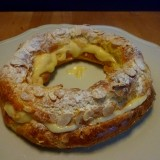

PARÍS-BREST DE CREMA CON PRALINE
Ingredientes
- 175 ml agua
- 50 g mantequilla
- 1 pizca de sal
- 135 g harina de repostería
- 3 huevos
- 2 cuch de almendras fileteadas
- 350 ml leche entera
- 1 vaina de vainilla
- 2 yemas
- 60 g azúcar
- 30 g almidón de maíz (Maizena)
- 25 g mantequilla
- 2 claras de huevo
- 1 cucharadita zumo de limón
- 2 cuch de praline o guirlache en trozos

No se debe preparar de un día para otro ni de muy temprano por la mañana para la cena. La masa pierde su finura por la humedad que absorbe de la crema y el frío húmedo del frigorífico. Pero necesita un tiempo de frío para que la crema se asiente, nunca superior a las 2-3 horas.
Hay versiones saladas calientes, que no están nada mal como entrada, con crema de espinacas o de puerros, una idea a no despreciar. También se pueden hacer aros pequeños y servirlos rellenos de crema de verduras como guarnición de una carne o un pescado. La masa, que no tiene azúcar, sirve para tarta dulce o salada y sólo habría que eliminar el azúcar por encima.

Encender el horno a 175º C.
Poner en un cazo el agua, la mantequilla y la sal. Acercar al fuego hasta que rompa el hervor. Añadir la harina de golpe, bajar el fuego y trabajar con la espátula hasta que toda haya sido absorbida y la masa se pegue a la espátula como una bola. Retirar del fuego y dejar templar un poco. Añadir los huevos uno a uno, trabajando la masa bien hasta que se haya absorbido uno antes de añadir el siguiente. El último batirlo, reservar 1 cucharada para pintar y añadir el resto poco a poco hasta que la masa esté bien suave y cremosa. Es posible que no haga falta todo. Para más detalle sobre cómo trabajar y cocer la masa de choux y los puntos más importantes de la misma a tener en cuenta para hacerla bien, consultar en el apartado MASAS DULCES de la pestaña ESPECIAL.
Sobre el revés de un papel de horno dibujar con un lápiz un círculo de 25 cm. Darle la vuelta y colocarlo sobre la bandeja del horno. Introducir la masa en una manga pastelera con boquilla lisa de 1,5 cm y dibujar un círculo siguiendo el de lápiz que se verá por el derecho. Dibujar otro círculo en la parte interior del primero y bien pegado a éste. Luego dibujar encima de los 2 círculos y sobre la junta que los une un tercero con el resto de la masa. Pintar de huevo y esparcir por encima las almendras fileteadas. Cocer en horno ya caliente durante unos 25 minutos –SIN ABRIR EL HORNO antes de este tiempo. Sacar del horno y, aún caliente, partirlo a 2/3 de su altura. Retirar el exceso de masa que tenga dentro el círculo inferior y en la cubierta. Dejar enfriar.
CREMA
Hervir la leche con la vainilla. Reposar unos minutos. Mientras, poner las yemas en un cuenco con 1/2 cucharada de agua fría y batir con la maizena y 20 g del azúcar. Añadir la leche y revolver, para devolver al cazo y cocinar, sin dejar de mover hasta que espese. Retirar del fuego, añadir la mantequilla, integrarla, cubrir con film plástico y dejar enfriar e introducir en frigorífico.
Batir las claras con el zumo de limón y el resto del azúcar hasta que estén bien duras. Introducir en frigorífico.
En el momento de montar la tarta, mezclar la crema con el merengue y añadir el praline elegido picado en trozos –ver receta en el apartado CURSO DE CHOCOLATE de la pestaña ESPECIAL. Rellenar con la crema el hueco en la rosca y cubrir con su tapa. Espolvorear azúcar glas.